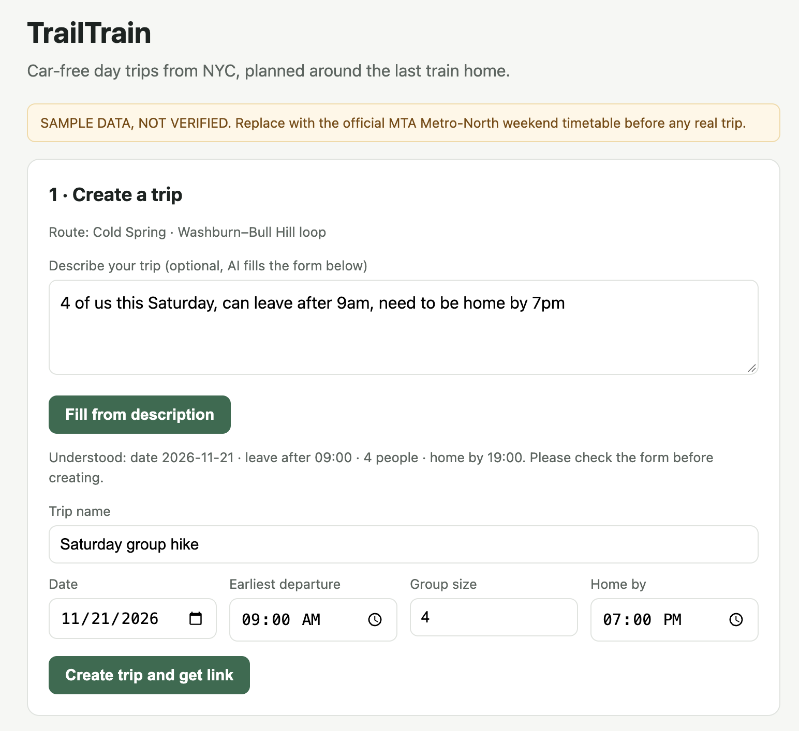
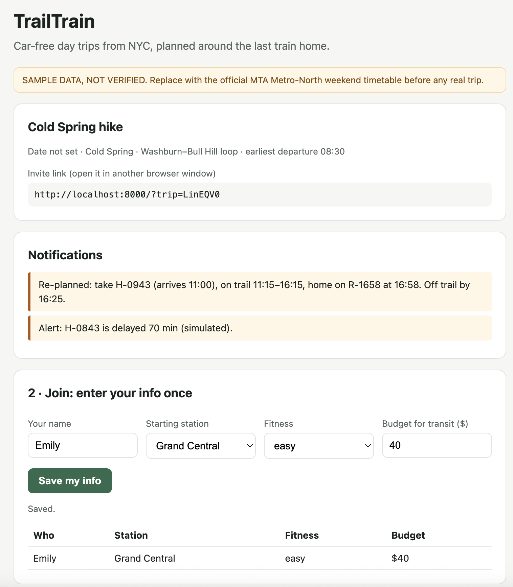
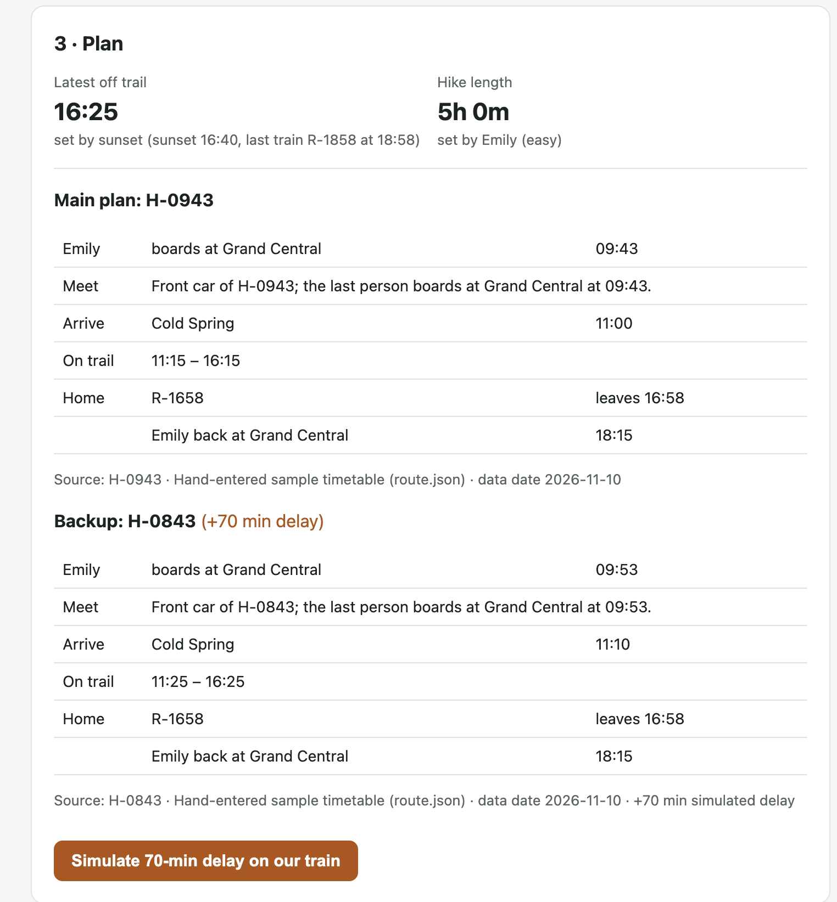

Helps friend groups in New York without a car turn “where should we go this weekend?” into a doable plan that gets everyone home before the last train.
Heads-up: this page uses PostHog analytics and session replay, so your clicks and scrolling on this page are recorded to help improve TrailTrain. Text you type into form fields is masked.
Product Showcase (Prototype / Live App / 2-Min Video)
Current Status: Build 3 · live at [LIVE URL] (Render, free tier: the first load can take about 50s) Demo: screenshots of the local prototype below (sample timetable data, not yet verified against MTA).

Build 2: the organizer describes the trip in one sentence; one AI call fills the form and shows what it understood. The organizer checks it before creating the trip.

Trip page: invite link, join form, and the notifications sent to everyone after a simulated 70-min delay.

Plan after the delay: the main plan moved to the next train, the delayed train became the backup, and every time shows its source.
The prototype only needs to prove one thing: a real group trip can go from creation to a plan, and re-plan automatically when there is a delay. The four screens to capture:
Create a trip: pick a destination and date, get an invite link
In a second browser window: a friend opens the link and enters their starting station, fitness level, and budget
Plan page: trains, meeting point, the last-train countdown, and a backup option
Click “Simulate delay”: the plan updates on its own and shows a notification to everyone
The app runs locally through Week 4. The cloud URL and 2-minute video come in Build 5.
Living PRD (Product Requirements Document)
Updated every week as we test with real users and learn what works.
PRD v3 · Nov 23, 2026 · Emily Chen (v2: Nov 16 · v1: Nov 10)
0. The Problem
Outdoor apps assume you drive. People without a car have to piece together transit schedules, weather, sunset, and the trip home on their own. Coordinating a group is even harder, so they often just don’t go.
Why an agent, not a regular app: it keeps watching for delays and weather, and re-plans automatically when something changes, instead of handing out a route once.
1. Target User & The Job to Be Done
Who is this for? The first users are organizers: people who live in New York, don’t have a car, want to get outdoors once or twice a month, and usually bring 2–4 friends. I can reach them through my friends, classmate group chats, and the hiking and ski communities I know. Organizers pay; invited friends join through the link with no sign-up and don’t pay.
Reachability test: book 20-minute calls with 5 organizers within 48 hours and ask each one: “The last time you organized a group trip, which step was the biggest hassle?” If I can’t, narrow the user group further. [TODO: interview progress _/5]
Before → After: Today the organizer switches back and forth between several tools. With the product, the organizer sends one link and the agent does the rest.
Step
Before (today)
After (with the product)
Pick a destination
Outdoor apps assume driving; you have to check yourself whether transit gets you there
Only recommends trails reachable by public transit
Coordinate departure
Asking over and over in the group chat who is leaving from where and when they’ll arrive
Each friend enters their starting station once through the link; the agent works out trains and a meeting point that work for everyone
Getting home
Working back from the last train by hand, which is easy to get wrong
Works back from the last train automatically and gives the latest time to leave the trail
Changes before leaving
Delay or weather change means scrambling in the group chat
The agent monitors, re-plans, and notifies everyone
Cost
[TODO (from interviews): how long one plan takes today, and how many trips got dropped because it was too much hassle]
Goal: the organizer sends a doable plan within 5 minutes
2. Scope & Explicit Non-Goals
v1 scope: NYC metro area only, groups of friends only, hiking and ski day trips reachable by public transit.
In Scope (Core Workflow): from creating a trip to a plan, then automatic re-planning when something changes.
Organizer creates the trip and gets an invite link
Friends enter their info: starting station, fitness level, budget
Agent merges everyone’s constraints
Agent produces the plan and a backup, working back from the last train
Agent monitors delays and weather (in the prototype, a “Simulate delay” button stands in for real data)
Decision: something changed → back to step 3, re-plan and notify everyone; nothing changed → continue
Check-in on the way home with a safety buddy → post-trip feedback and trail conditions (only if time allows; not part of the main line)
The organizer and each friend enter information only once; the agent handles the rest.
Out of Scope #1: No matching with strangers, no feed, no chat rooms. Cold start is hard, and strangers hiking together raises safety liability. v1 only serves existing friend groups.
Out of Scope #2: No driving routes, and nothing outside the NYC metro area. A narrow scope is what keeps the schedule data accurate. The trail list is hand-curated, 15–20 trails.
Out of Scope #3: No real-time GPS navigation or ticket booking. Navigation stays with existing apps; v1 only provides the plan, reminders, and the check-in on the way home.
Success Criteria (after 4 weeks)
At least 3 real friend groups complete a full trip through the product, and every train in their plans can be traced back to a published schedule.
☐ 3 friend groups complete “create trip → enter info → get plan”
☐ Every time in a plan has a data source; no times made up by the model
☐ At least 2 organizers say “I’d use this again” and answer whether they would pay, and how much
Risks
Risk
Impact
Mitigation
The AI misreads the trip description (wrong date, time, or group size)
The plan is built on the wrong inputs and the group trusts it
AI only fills the form; the organizer sees an “Understood” summary and confirms; invalid values are dropped; train times never come from the AI
Schedule data is wrong, or there is a special weekend schedule
The group misses the train
Label every plan with the data date and source, and re-check once before departure
Friends won’t open the link and fill in their info
Few trips actually get organized
No sign-up, done in under a minute
Scope is too big to finish in four weeks
No prototype to show
Get one route working end to end first, then expand to 15–20
3. How It Works Under the Hood & Riskiest Assumption (Week 2+)
Biggest risk (PRD v2): the AI misunderstands what the organizer wrote, for example “this Saturday” becomes the wrong date, “after 9” becomes 21:00, or the group size is guessed. If the inputs are wrong, every train time after that is wrong too, even though the timetable rules are correct. (v1’s riskiest assumption, wrong schedule data, is still open and stays in the risk table.)
How Build 2 tests it:
Human check built in: the AI never creates the trip. It only pre-fills the form and shows “Understood: date · leave after · people · home by”. The organizer fixes anything wrong before clicking Create.
Validation layer: the server checks every value the AI returns (real date, not in the past; HH:MM times; group size 1–30; destination must be a supported route). Bad values are dropped with a visible note instead of reaching the plan. Covered by 4 automated tests with no network.
PostHog evidence:parsed_trip_description records success or failure and which fields were found (never the raw text); created_trip records whether the description was used. Session replays show whether people edit the AI’s values before creating the trip, which is the signal that it misread them.
Next: pod testing on Nov 17 with real phrasing from classmates, then a 10-case eval (normal, messy, adversarial) in Build 4.
How the app works:
Organizer types a sentence (e.g. “4 of us this Saturday, leave after 9am, home by 7pm”) and clicks Fill from description.
The local Python server (standard library only) sends it with today’s date to one LLM call through OpenRouter (anthropic/claude-haiku-5.5), asking for JSON only.
The server validates the JSON and returns the fields plus any notes; the page fills the form for the organizer to check.
Organizer creates the trip and shares the link; friends enter station, fitness, and budget once.
A rules-only planner works back from the last train over the timetable in route.json: main train, backup, latest time off the trail, and a warning if someone gets home after the home-by time. Every time shows its source.
“Simulate delay” re-runs the planner and notifies everyone. PostHog records pageviews, clicks, session replays, and four named events.
API key lives in a local .env file that is git-ignored; setup steps are in AGENTS.md.
3b. Hosting, Data & Security (PRD v3)
Hosting: one free Render web service (render.yaml), served over HTTPS. It is the same Python standard-library server as the local version, with no build step. The free tier sleeps when idle, so the first visit can take about 50s.
Database: none, on purpose. A trip lasts one day and is shared by link. Trips live in memory and are lost on restart, which is fine for pod testing. Next step if real groups use it: one small Postgres table for trips.
Sign-in: none, on purpose. Invited friends should be able to join from a link with no account (PRD §1). The link is the key: a 96-bit random trip ID that cannot be listed or guessed.
Security: a per-IP rate limit (10 writes/min; 5 AI calls/min) plus a global cap of 200 AI calls/day so no one can burn the OpenRouter credit. Request bodies are capped at 10 KB with typed validation, and the server caps trips, people, and notifications. Security headers are on, and the API key is kept only in Render's environment settings. Proof: 30 rapid calls give 10 created and 20 refused with 429. Full audit: SECURITY.md.
Analytics: the same PostHog project and session replay run on the live site.
4. Unit Economics & Analytics Snapshot (Updated Weekly)
Cumulative Build Spend
$0.00
Through Build 2. OpenRouter usage so far rounds to $0 (a few test parses); no hosting or paid tools yet.
Est. Cost Per User Run
< $0.0001
One parse ≈ 300 input + 80 output tokens on Claude Haiku 5.5 via OpenRouter ($0.10 / $0.50 per million tokens) ≈ $0.00007. Planning itself is rules-only and free. Estimate, not yet measured.
User Evidence (Analytics from Build 2)
PostHog live
Pageviews, clicks, and session replay verified on both this Product Page and the local app (dashboard “TrailTrain Build 2”). Real user numbers start with pod testing on Nov 17.
Sponsor Call (Week 6)
TBD
Weekly Build Log
Build on at least two separate days each week outside class, including the November 3 break. Push commits and log actual progress, failures, PRD changes, costs, and hours here. All build deadlines are noon, New York time.
Build 1 · Intent.md & Throwaway Prototype (Due Nov 9)
What shipped: PRD v1 written and the Product Page published. Local prototype (Python standard library + one HTML page) runs the main line for one route, Grand Central → Cold Spring: create a trip → friends join via link → plan with the last-train countdown and a backup → “Simulate delay” re-plans and notifies everyone (screenshots above). Timetable is sample data, not yet verified against MTA.
Things learned with AI:[TODO: what you learned from AI practice and Terminus Episodes 1 and 2]
What broke / changed in PRD: Narrowed scope to the NYC metro area, friend groups, and transit-reachable hiking and ski day trips; monitoring is stood in for by a “Simulate delay” button for now. [TODO: what broke or changed while building the prototype]
Cost & time this week:$[TODO] · [TODO] hours (track model API calls, hosting, and tool subscriptions; log actual working hours)
Build 2 · Smallest Local Version & PostHog (Due Nov 16)
What shipped: One complete user action with a real AI call: the organizer describes the trip in plain language, one OpenRouter call parses it, the server validates the result, and the form fills in for the organizer to confirm (screenshot above). Added group size and a home-by time; the plan warns if someone gets home late. PostHog installed on this page and the local app, with four named events. AGENTS.md now covers .env setup. 13 automated tests pass. Commits on Nov 15 and Nov 16.
What broke / changed in PRD: Biggest risk moved from wrong schedule data to the AI misreading the trip description, because that is the new piece this build adds. Kept the AI out of train times on purpose: it only parses text, and rules still build the plan. Only one route (Cold Spring) is supported, so other destinations get a note instead of a plan. Pushing the first commit failed because GitHub had a README edit I didn’t have locally; rebased and pushed.
Cost & time this week: $0.00 · ~4 hours (est. < $0.0001 per parse)
Build 3 · Build.exe: The Core Workflow (Due Nov 23)
What shipped: The app is live on Render (Beginner lane) and usable from a phone. The agent now watches a delay feed and re-plans on its own (PR #1). I did a full security audit (SECURITY.md): added rate limits, a daily AI cost cap, body and type validation, memory caps, longer trip IDs, and security headers. 19 automated tests pass, including the 30-call rate-limit test. AGENTS.md now has Shipping and Ask me first sections, plus two rules that came from real agent mistakes.
What broke / changed in PRD: PRD v3 adds hosting, data, and security choices, with no database and no sign-in on purpose. The server was bound to 127.0.0.1:8000 and could not run on a host until it read HOST and PORT. The first security test quietly made real OpenRouter calls; I caught it because the test run was slow, and now the LLM is stubbed. During a manual check the agent left a local server running.
Cost & time this week: $0.00 (Render free tier; OpenRouter use rounds to $0) · [TODO] hours
Build 4 · Test.py: Choose Track A or Track B (Due Nov 30)
Chosen track: [A: 10-case domain eval and one outside target-user review; OR B: 3–5 outside users and replay findings]
Results and improvements: [Before/after evidence; for Track B, fixes to the top three friction points]
PRD v4 changes: [What the evidence changed]
Cost & time this week: $[0.00] · [0] hours
Build 5 · Ship.installer: Launch Ops, Rollback Check & 2-Min Video (Due Dec 7)
Launch Ops & Safety: [Verified no exposed keys, set spend cap, tested 2-minute rollback]